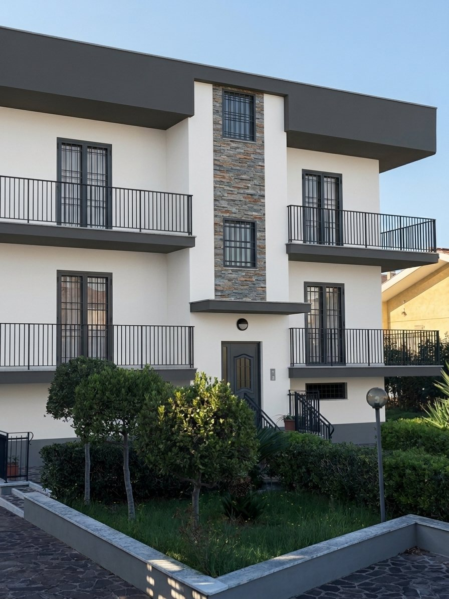
Studio di fattibilità
Project1
Aprilia · piano terra e seminterrato · due unità
Scorri per vedere il progetto ↓
Il progetto in numeri
Un piano terra, due case.
Il piano terra rialzato e la quota di seminterrato diventano due unità: una su un solo livello, l'altra su due livelli collegati da una scala interna. Le superfici sono nette e calcolate dalle piante di questa pagina.
Prima e dopo
Stessa casa, nuova pelle.
Le geometrie restano quelle di oggi: cambiano solo materiali e finiture, con lo stesso linguaggio delle villette nuove della zona. Trascina il cursore per confrontare.
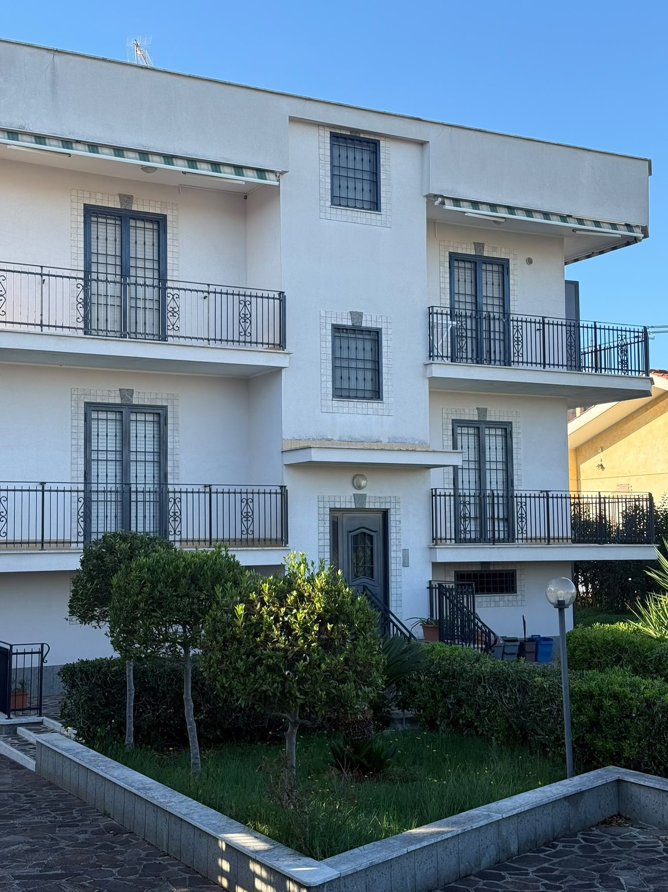
OggiProgettoPietra a spacco
Il corpo scala centrale, dal portoncino al cornicione, rivestito in listelli di pietra nei toni del grigio e della ruggine.
Fasce antracite
Cornicione e frontalini dei balconi in grigio antracite opaco; intonaco bianco caldo e zoccolatura scura.
Linee pulite
Parapetti a piatti verticali neri, nessuna cornice a mosaico, infissi e portoncino antracite, via le tende a righe.
Stato di fatto
La casa com'è oggi.
Fronte su via Cagliari, corpo scala centrale con l'ingresso condominiale, lato nord con l'accesso al garage e il piazzale in porfido.
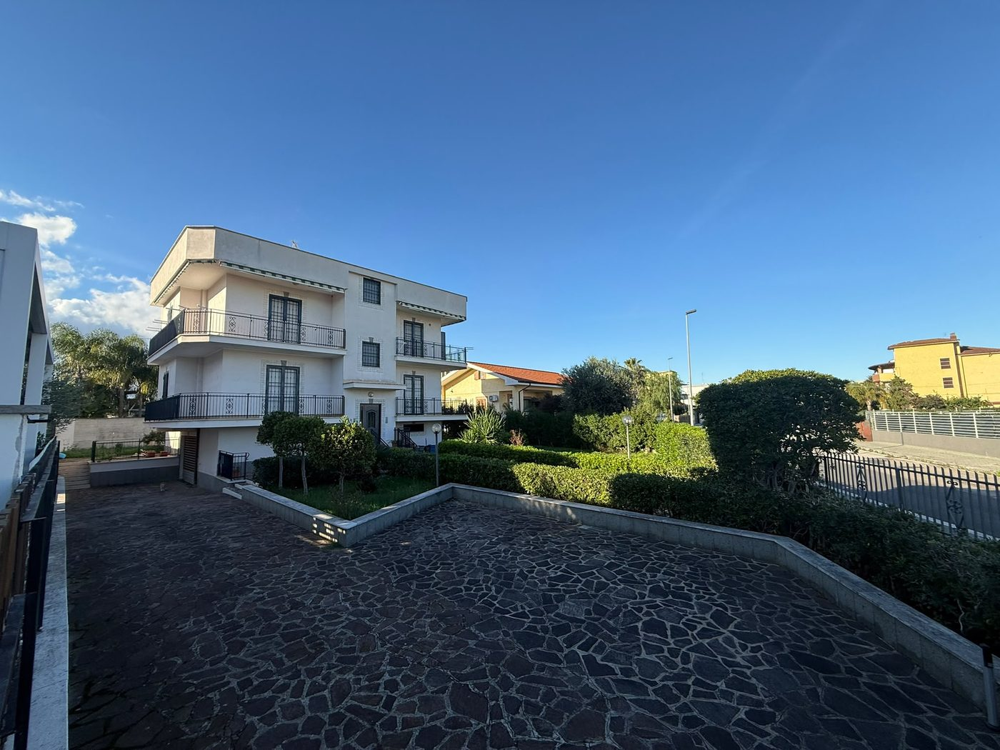
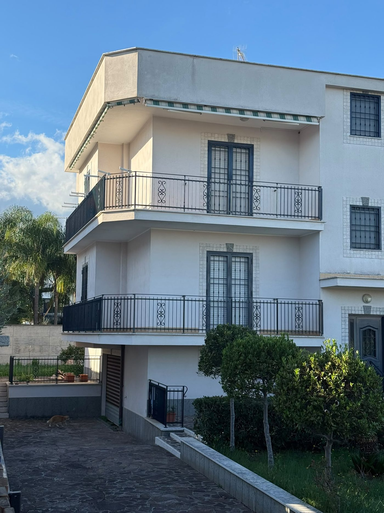
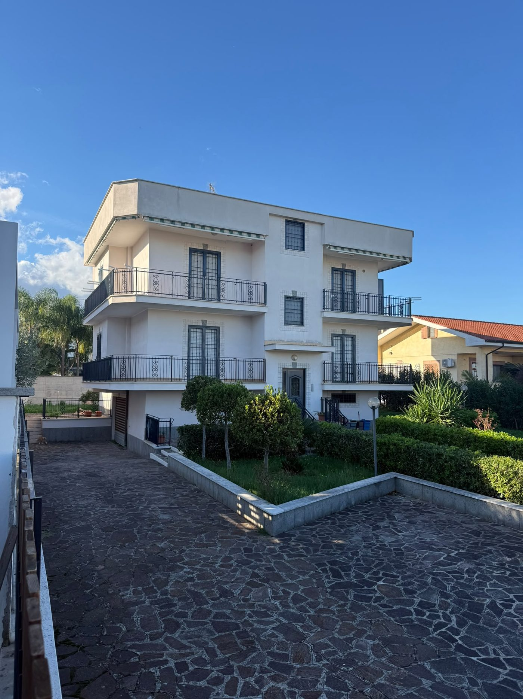
Modello 3D
Sopra e sotto, nello stesso modello.
Piano terra e seminterrato con lo stato attuale e il progetto: arredi reali da 3D Warehouse, porte e finestre, controsoffitti con LED (pulsante Controsoffitti), pavimento in resina, vano scala condominiale e corte. Puoi sovrapporre il rilievo Polycam e separare i piani con la vista esplosa.
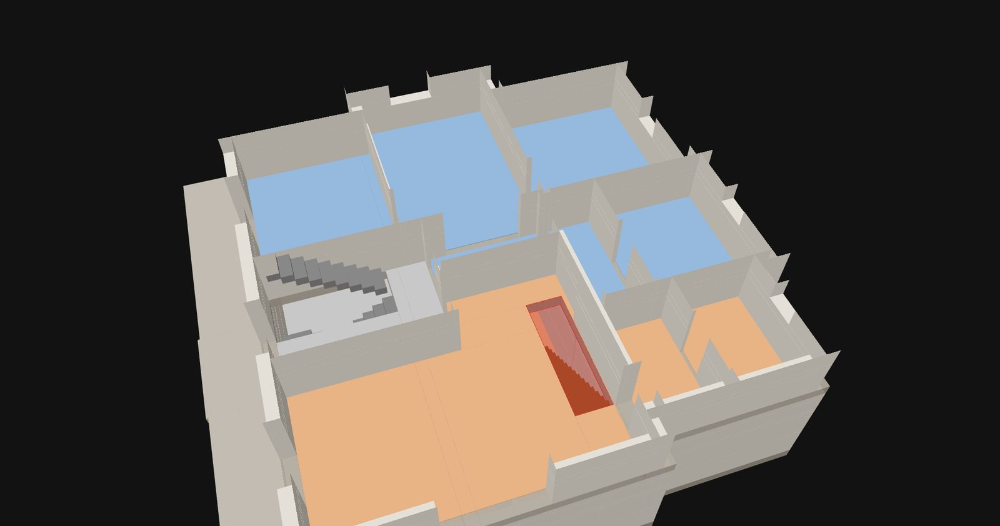
Circa 7 MB, si caricano solo quando apri il modello.
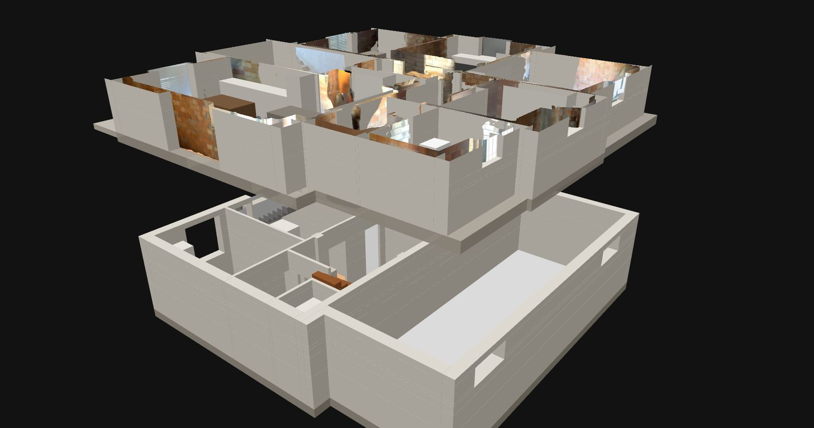
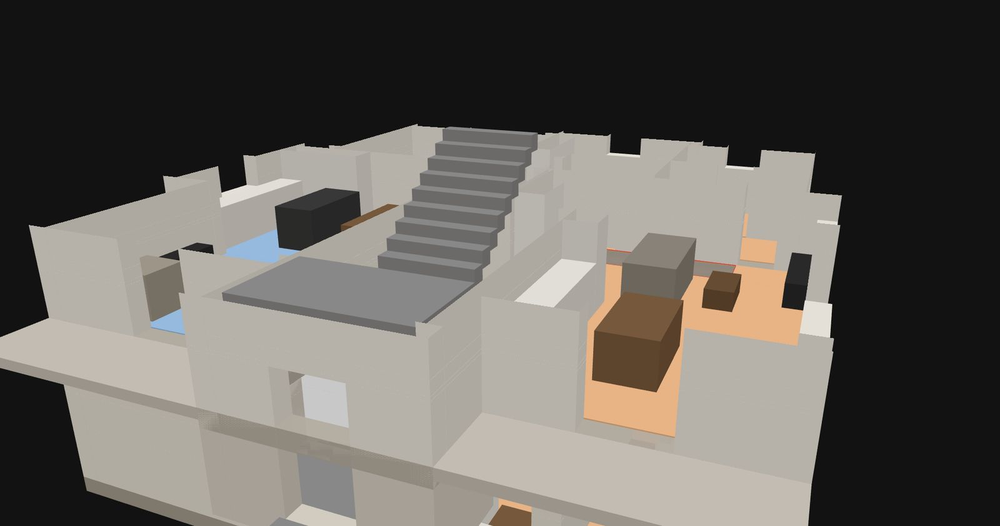
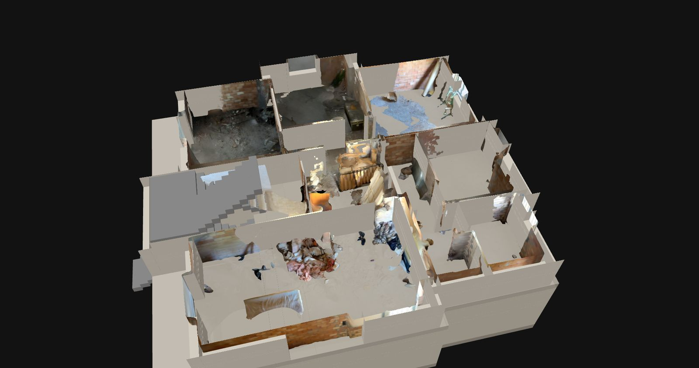
Le due unità
Come si divide la casa.
Le due unità si aprono sul pianerottolo del piano terra. L'unità B scende al seminterrato con una scala tutta sua, senza passare dalle parti comuni.
Unità A
Solo piano terra · 65,6 m² netti
- Soggiorno, pranzo e cucina sul fronte33,2 m²
- Camera matrimoniale15,1 m²
- Camera9,1 m²
- Ingresso3,9 m²
- Bagno3,2 m²
- Disimpegno1,1 m²
Unità B
Duplex · 36,7 + 39,8 m² netti
Piano terra
- Soggiorno con cucina e scala30,4 m²
- Bagno5,2 m²
- Lavanderia4,1 m²
Seminterrato
- Camera11,1 m²
- Camera9,7 m²
- Bagno3,6 m²
- Disimpegno, scala e ripostiglio15,4 m²
Il vano scala
Dalla strada 5 gradini portano al portoncino e all'atrio, 1,36 m sotto il piano terra. Dall'atrio una rampa sale al pianerottolo delle due unità, una scende al garage e sopra di questa parte la scala per il primo piano.
La scala interna
Una rampa unica lungo il muro di spina, dal soggiorno dell'unità B al seminterrato: 16 alzate da circa 19 cm e pedate da 25 cm, con un foro nel solaio di 0,92 × 3,20 m.
Finestre ribassate
Il piano terra è circa 2,20 m sopra il giardino e il seminterrato è interrato per meno di un metro. Le finestre si abbassano fino a 20 cm dal terreno e diventano finestre da circa 1,50 m.
Gli interni
Come si vivrà.
Ogni render parte da una camera del modello 3D. Il numero sulla pianta arredata è la posizione della camera, il cono è quello che inquadra; accanto ci sono il render e la vista del modello dalla stessa camera, con gli arredi nelle stesse posizioni.
Open space · unità A
Dall'angolo nord-est verso la strada: cucina sul muro nord, tavolo al centro, divano verso la portafinestra.
Apri il 3D da questa camera →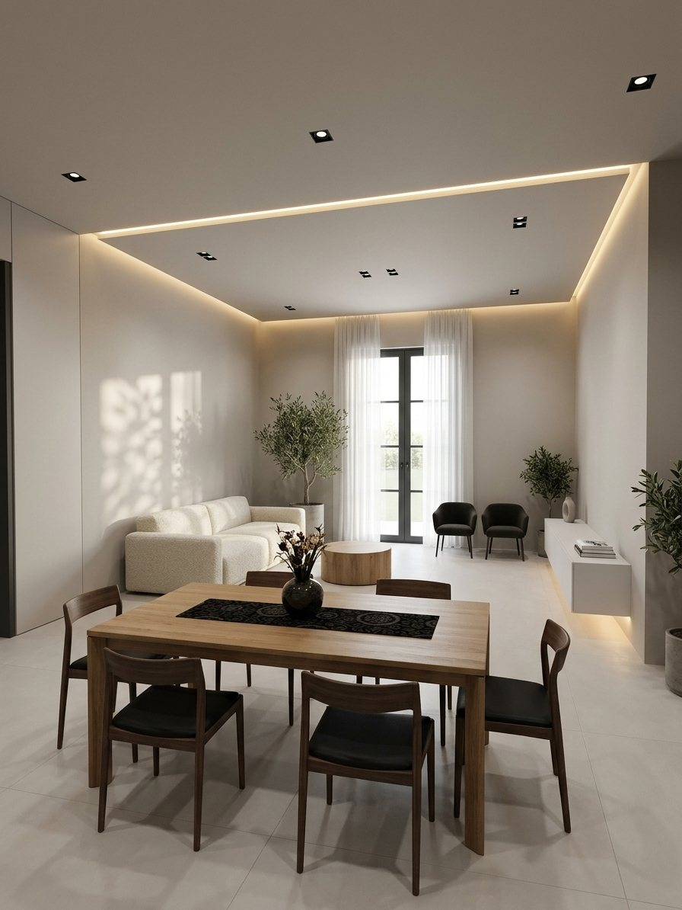
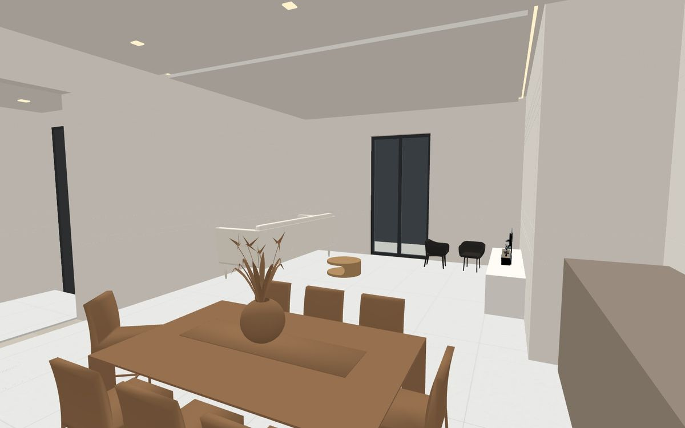
Camera matrimoniale · unità A
Dalla porta verso il letto: letto contro il muro nord, armadio a tutta altezza, finestra sul retro.
Apri il 3D da questa camera →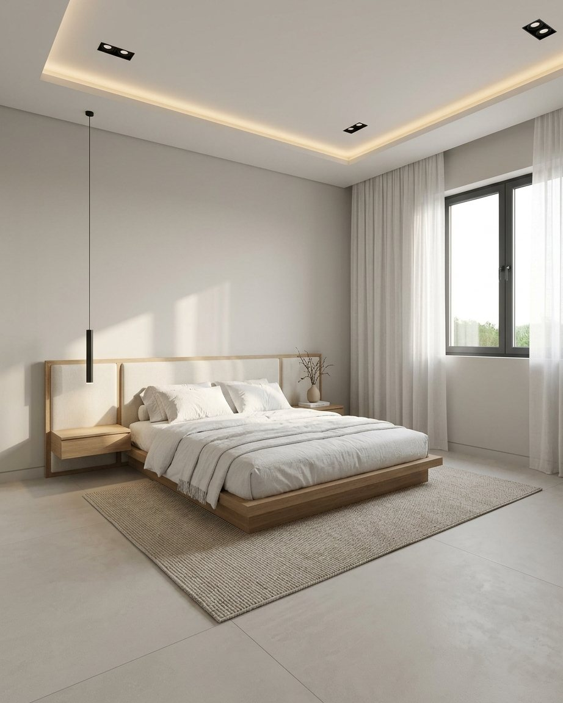
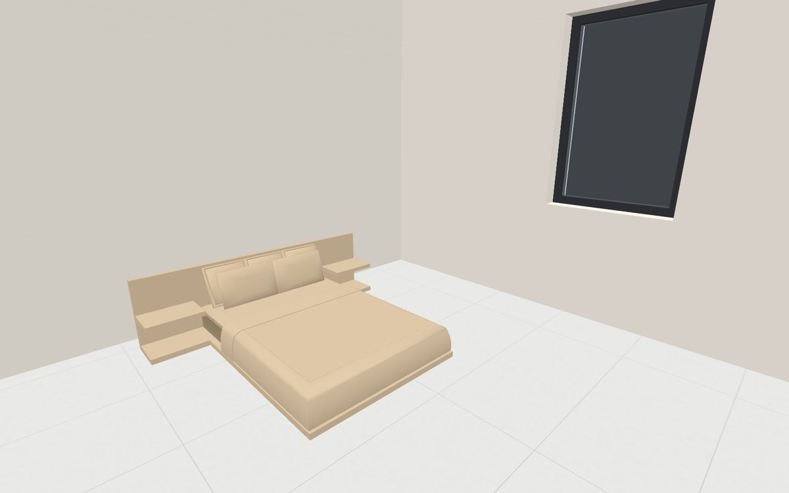
Soggiorno con cucina · unità B
Dal lato sud verso la strada: portafinestra sul giardino a sinistra, tavolo al centro, cucina tortora a destra.
Apri il 3D da questa camera →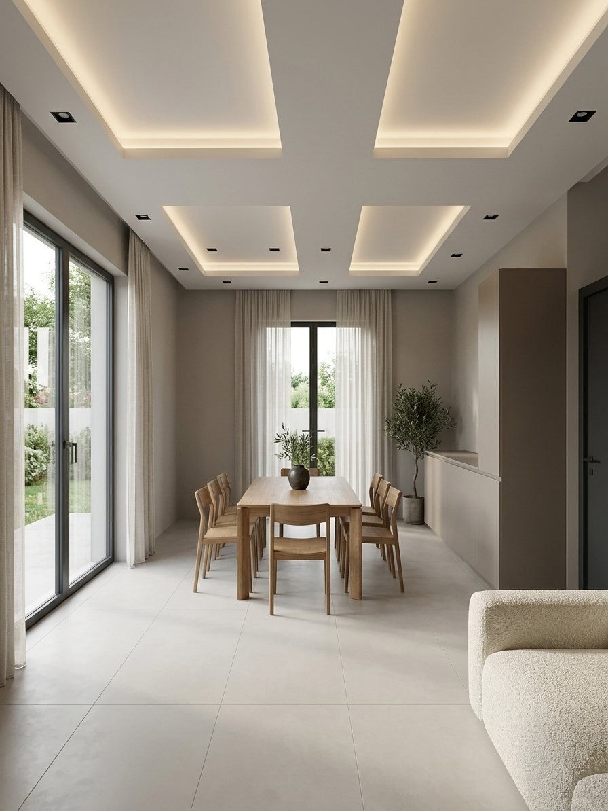
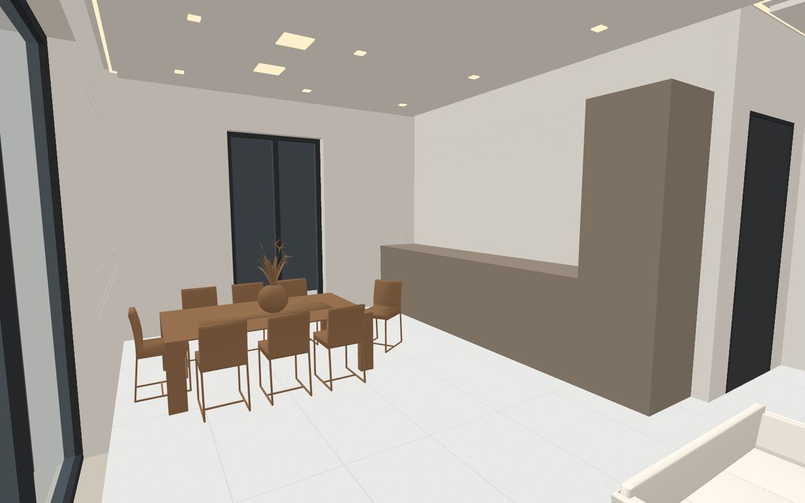
Interni e impianti
Tutto rifatto da zero.
Gli impianti sono da rifare completamente: le tavole 05–08 li descrivono stanza per stanza, così le ditte possono fare l'offerta sulle stesse quantità.
Pavimenti
Gres effetto resina chiaro neutro freddo, lastre 120 × 60 con fuga 2 mm, uguale in tutte le stanze. Nei bagni lastre a tutta altezza in zona doccia.
Controsoffitti e luce
Cartongesso con gola LED perimetrale nella zona giorno, faretti a incasso, sospensioni sull'isola e sul tavolo. Ribassi a 2,40 m dove passano gli impianti.
Impianto elettrico
Un quadro per unità, linee dedicate per cucina, lavatrice e climatizzazione, punti TV e dati, videocitofono. Dotazioni almeno di livello 1 della norma CEI 64-8.
Acqua e clima
Pompa di calore per unità, acqua calda ad accumulo, collettori sanitari, nuove colonne di scarico. Il bagno del seminterrato scarica con una stazione di sollevamento.
Computo metrico
Quanto costa.
Quantità ricavate dal modello di progetto, prezzi indicativi Lazio 2026, da confermare con le offerte delle ditte. Arredi esclusi. Il file Excel ha le 62 voci con le formule, le leve di risparmio e il conto economico.
| Voce | Unità A € | Unità B € | Totale € |
|---|---|---|---|
| 01 Demolizioni, rimozioni e sgombero | 7.544 | 6.097 | 13.641 |
| 02 Opere strutturali | 6.800 | 27.000 | 33.800 |
| 03 Seminterrato: risanamento e abitabilità | 0 | 7.455 | 7.455 |
| 04 Opere edili e finiture | 22.949 | 33.341 | 56.290 |
| 05 Serramenti | 9.358 | 15.180 | 24.538 |
| 06 Impianto elettrico e illuminazione | 10.748 | 14.225 | 24.973 |
| 07 Impianto idrico-sanitario | 7.880 | 13.390 | 21.270 |
| 08 Riscaldamento, raffrescamento e ACS | 14.184 | 17.234 | 31.417 |
| 09 Esterni e parti comuni (quota) | 1.250 | 2.450 | 3.700 |
| Totale lavori | 80.713 | 136.372 | 217.084 |
| Assistenze murarie agli impianti (8%) | 2.625 | 3.588 | 6.213 |
| Oneri della sicurezza (3%) | 2.421 | 4.091 | 6.513 |
| Imprevisti (8%) | 6.667 | 11.197 | 17.864 |
| IVA sui lavori (10%) | 9.243 | 15.525 | 24.767 |
| Spese tecniche (9% + cassa + IVA) | 10.554 | 17.728 | 28.282 |
| Catasto, frazionamento, APE | 1.200 | 1.200 | 2.400 |
| Contributo per il cambio d'uso (stima) | 0 | 3.500 | 3.500 |
| Totale costo intervento | 113.423 | 193.200 | 306.623 |
Le leve più pesanti: climatizzazione a split invece del radiante (−27.200 €), controsoffitti solo dove servono (−12.900 €), nessun nuovo varco nel muro di spina dell'unità A (−9.600 €), spese tecniche al 6% con progetto e render fatti da VISIO (−9.400 €). Restano da valutare l'acquisto diretto dei materiali, gli imprevisti al 5% dopo i saggi e l'operazione tramite società.
Tavole tecniche
Le carte del progetto.
Dieci tavole in formato A3: architettonico, interni, impianti, area esterna e punti di vista dei render. Clicca una tavola per vederla a tutta pagina.
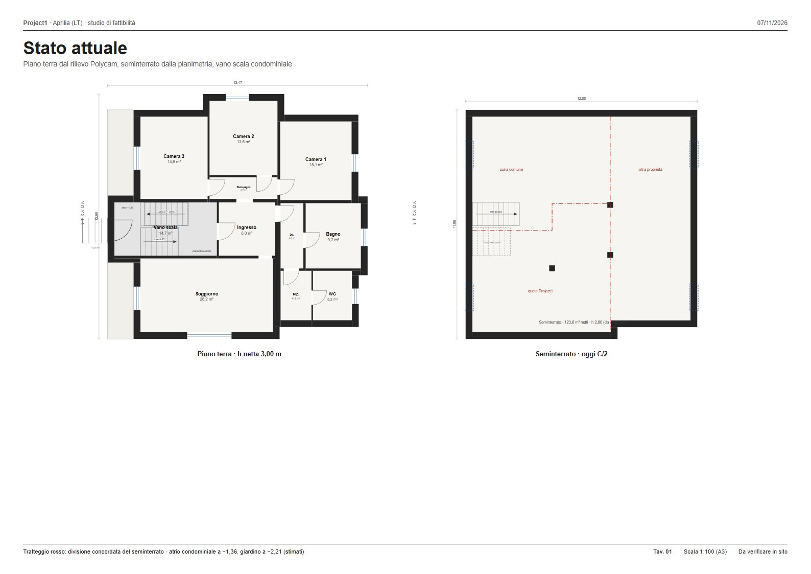
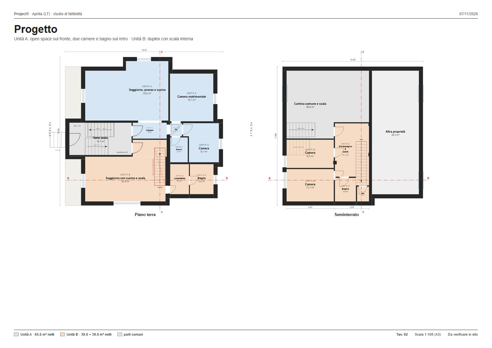
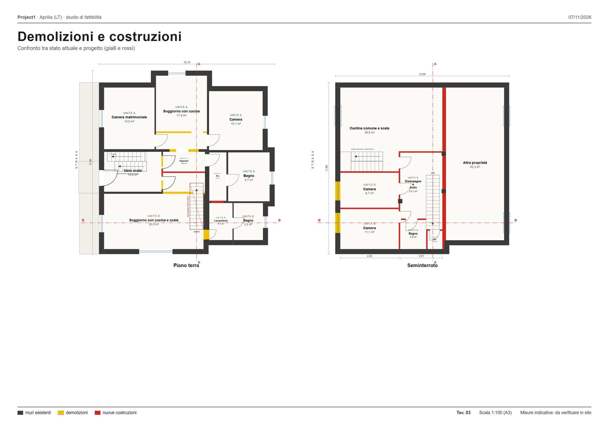
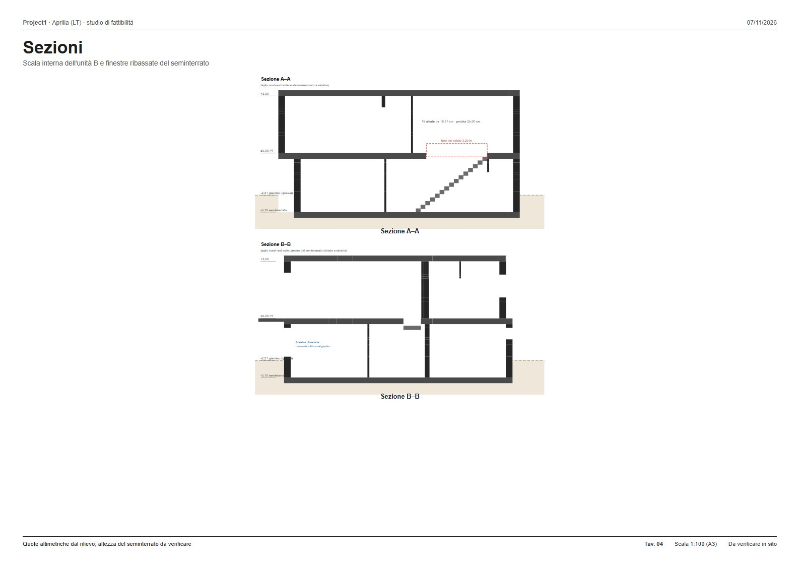
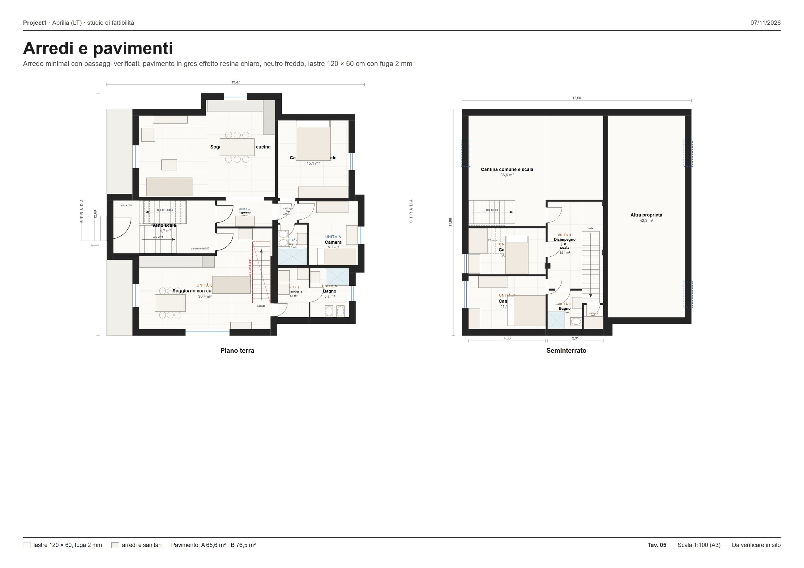
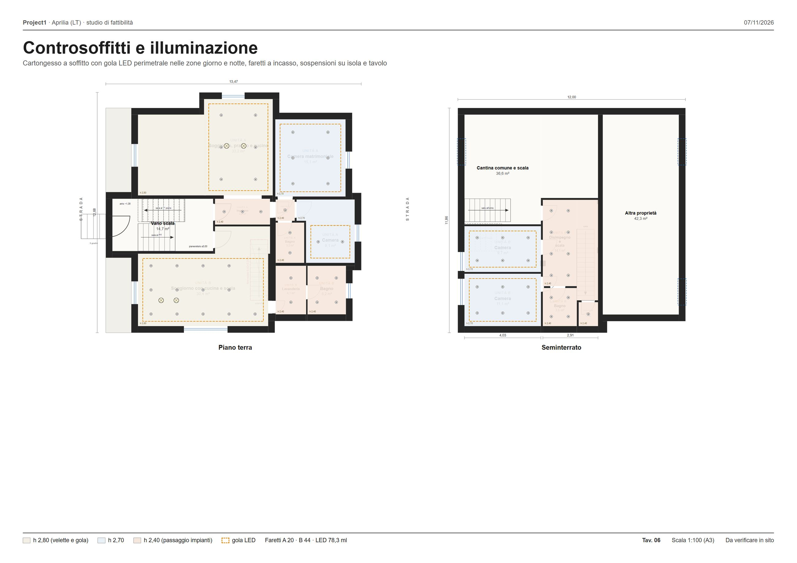
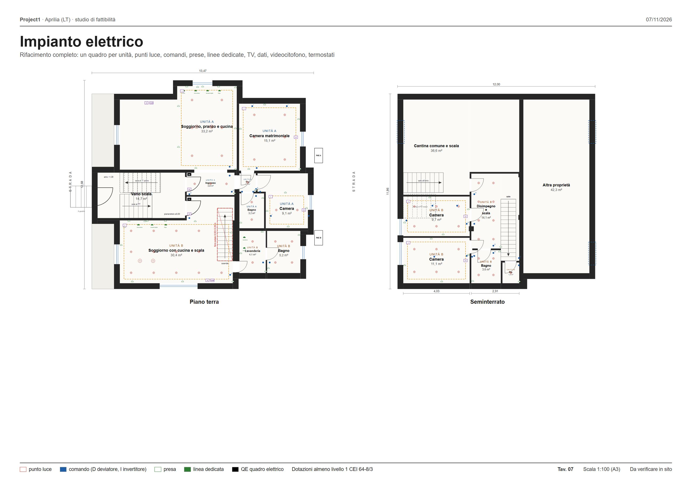
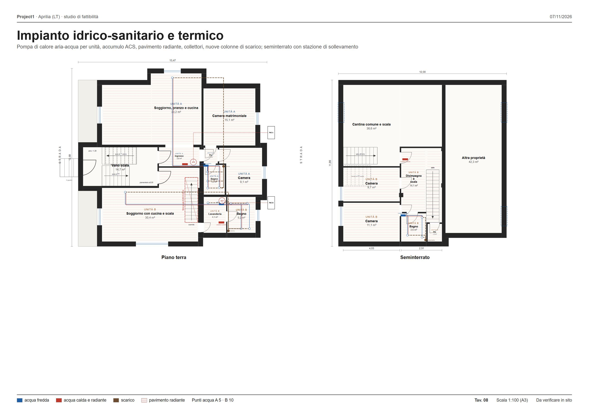
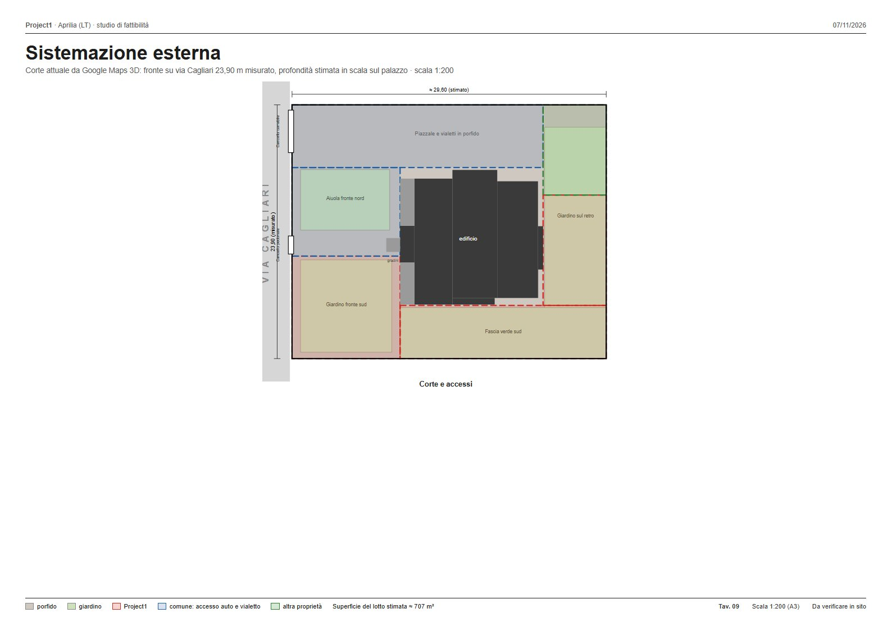
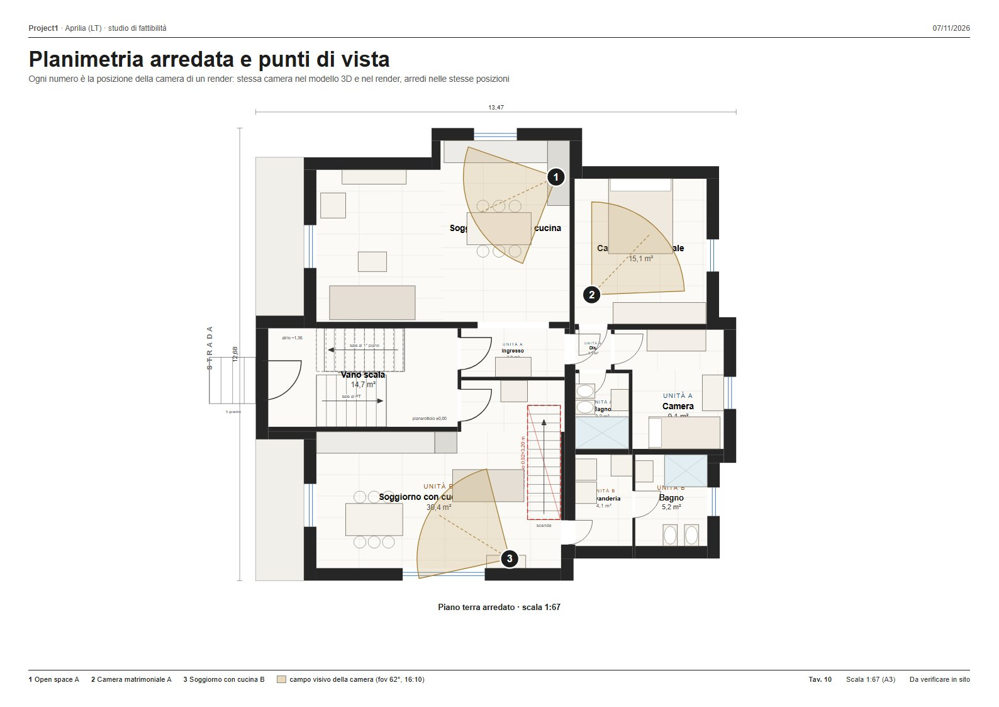
Prossimi passi
Da verificare in sito.
- Altezza netta del seminterrato: nel modello è 2,80 m.
- Quote dell'atrio e del giardino rispetto al piano terra: nel modello −1,36 m e −2,21 m.
- Direzione dei travetti del solaio, guardando il soffitto del seminterrato: decide il rinforzo attorno al foro della scala.
- Pilastri e trave sul muro di spina; lato e profondità reali del lotto.
- Nuova finestra della camera nord del seminterrato, fuori dall'ingombro della rampa comune.
- Cambio d'uso del seminterrato, frazionamento e divisione della corte con l'altra proprietà.
File del progetto
Tavole A3PDF · 10 tavole Modello SketchUp v3SKP · millimetri · arredi, serramenti, controsoffitti Computo metricoExcel · voci, leve, conto economico Modello 3D disegnatoDAE · per SketchUp Modello 3D nel browsercon rilievo PolycamIl file SketchUp v3 ha un tag per ogni parte (stato attuale, progetto, arredi, serramenti, controsoffitti e LED, esterni) e cinque scene pronte; pavimento in resina 120 × 60 con texture, pareti greige, cucine tortora. Gli arredi vengono da 3D Warehouse e sono esclusi dal computo.
Il progetto è sempre qui.
Questa pagina si aggiorna insieme al lavoro: render degli interni e versioni successive arriveranno qui.
Scrivici